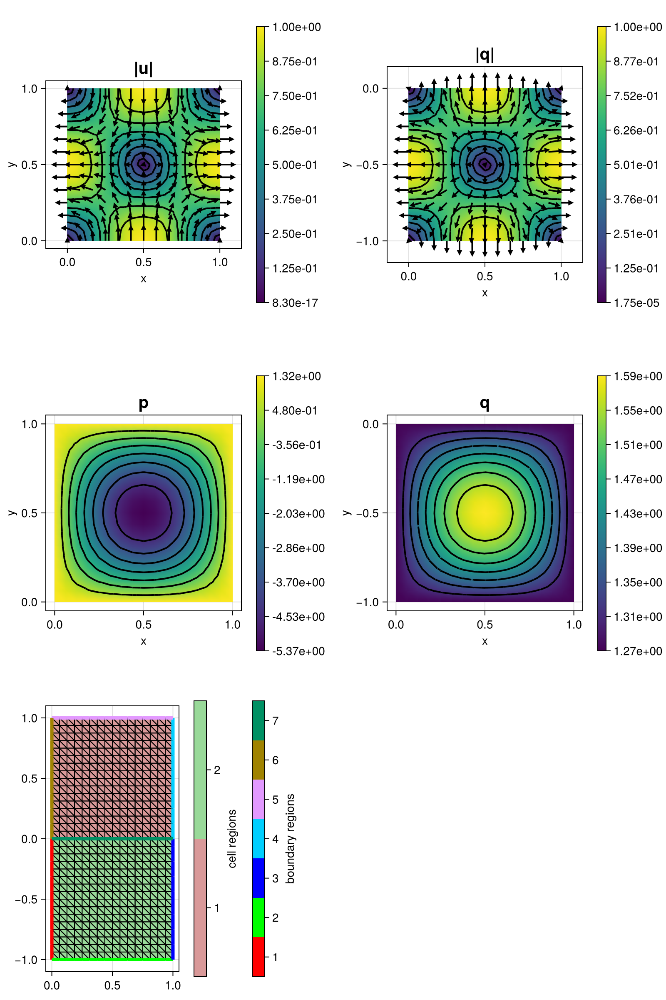

264 : Stokes+Darcy
This example solves the coupled Stokes-Darcy problem in a domain $\Omega := \Omega_\text{FF} \cup \Omega_\text{PM}$ that has a free flow region $\Omega_\text{FF}$ and a porous media regions $\Omega_\text{PM}$. In the free flow region a Stokes problem is solved that seeks a velocity $\mathbf{u}_\text{FF}$ and a pressure $\mathbf{p}_\text{FF}$ such that
\[\begin{aligned} - 2\mu \mathrm{div}(\epsilon(\mathbf{u}_\text{FF}) - p_\text{FF}I) & = \mathbf{f}_\text{FF}\\ \mathrm{div}(\mathbf{u}_\text{FF}) & = 0. \end{aligned}\]
In the porous media region the Darcy problem is solved that seeks a velocity $\mathbf{u}_\text{PM}$ and a pressure $\mathbf{p}_\text{PM}$ such that
\[\begin{aligned} \mathbf{u}_\text{PM} + k \nabla p_\text{PM} & = 0\\ \mathrm{div}(\mathbf{u}_\text{PM}) & = f_\text{PM}. \end{aligned}\]
On the interface $\Gamma := \partial \Omega_\text{FF} \cap \partial \Omega_\text{PM}$ the two velocities are coupled via several conditions, i.e., the conservation of mass
\[\mathbf{u}_\text{FF} \cdot \mathbf{n} = \mathbf{u}_\text{PM} \cdot \mathbf{n} \quad \text{on } \Gamma,\]
the balance of normal forces
\[p_\text{FF} - 2\mu \epsilon(\mathbf{u}_\text{FF}) \mathbf{n}_\text{FF} \cdot \mathbf{n}_\text{FF} = p_\text{PM},\]
and the Beavers-Joseph-Saffman condition
\[\mathbf{u}_\text{FF} \cdot \mathbf{\tau} = -\frac{\sqrt{\mu k}}{\mu \alpha} 2 \epsilon(\mathbf{u}_\text{FF}) \mathbf{n}_\text{FF} \cdot \mathbf{\tau}.\]
The interface condition for the normal fluxes is realized weakly via a Lagrange multiplier $\lambda$ that only lives on the interface.
The weak formulation leads to the problem: seek $(\mathbf{u}_\text{FF}, \mathbf{u}_\text{PM}, p_\text{FF}, p_\text{PM}, \lambda)$ such that, for all $(\mathbf{v}_\text{FF}, \mathbf{v}_\text{PM}, q_\text{FF}, q_\text{PM}, \chi)$,
\[\begin{aligned} a_1(\mathbf{u}_\text{FF},\mathbf{v}_\text{FF}) + a_2(\mathbf{u}_\text{PM}, \mathbf{v}_\text{PM}) + b_1(p_\text{FF},\mathbf{v}_\text{FF}) + b_2(p_\text{PM},\mathbf{v}_\text{PM}) + b_{\Gamma}(\mathbf{v}_\text{FF} - \mathbf{v}_\text{PM}, \lambda) & = (\mathbf{f}_\text{FF}, \mathbf{v}_\text{FF})_{L^2(\Omega_\text{FF})}\\ b_1(q_\text{FF},\mathbf{u}_\text{FF}) + b_2(q_\text{PM},\mathbf{u}_\text{PM}) & = (f_\text{PM}, q_\text{PM})_{L^2(\Omega_\text{PM})}\\ b_{\Gamma}(\mathbf{u}_\text{FF} - \mathbf{u}_\text{PM}, \chi) & = 0. \end{aligned}\]
The bilinearforms read
\[\begin{aligned} a_1(\mathbf{u}_\text{FF},\mathbf{v}_\text{FF}) & := 2\mu (\epsilon(\mathbf{u}_\text{FF}), \epsilon(\mathbf{v}_\text{FF}))_{L^2(\Omega_\text{FF})} + \frac{αμ}{\sqrt{μk}} (\mathbf{u}_\text{FF} \cdot \mathbf{\tau},\mathbf{v}_\text{FF} \cdot \mathbf{\tau})_{L^2(\Gamma)}\\ a_2(\mathbf{u}_\text{PM}, \mathbf{v}_\text{PM}) & := (\mathbf{u}_\text{PM}, \mathbf{v}_\text{PM})_{L^2(\Omega_\text{PM})}\\ b_1(q_\text{FF},\mathbf{v}_\text{FF}) & := -(\mathrm{div} \mathbf{v}_\text{FF}, q_\text{FF})_{L^2(\Omega_\text{FF})}\\ b_2(q_\text{PM},\mathbf{v}_\text{PM}) & := -(\mathrm{div} \mathbf{v}_\text{PM}, q_\text{PM})_{L^2(\Omega_\text{PM})}\\ b_{\Gamma}(\mathbf{v}, \lambda) & := (\mathbf{v} \cdot \mathbf{n}, \lambda)_{L^2(\Gamma)} \end{aligned}\]
Details on the model can be found e.g. in the reference below.
''Coupling Fluid Flow with Porous Media Flow'' SIAM Journal on Numerical Analysis 2002 40:6, 2195-2218 >Link<
In this example an analytic benchmark problem is solved with the Taylor–Hood FEM in the free flow domain and the Raviart–Thomas FEM in the porous media domain.
The computed solution for the default parameters looks like this:

module Example264_StokesDarcy
using ExtendableFEM
using ExtendableFEMBase
using ExtendableGrids
using GridVisualize
using SimplexGridFactory
using Triangulate
using Metis
# exact solution and data functions
function u!(result, qpinfo)
x = qpinfo.x
result[1] = -cos(pi * x[1]) * sin(pi * x[2])
result[2] = sin(pi * x[1]) * cos(pi * x[2])
return nothing
end
function f_FF!(result, qpinfo)
x = qpinfo.x
result[1] = -(4 * pi^2 + 1) * cos(pi * x[1]) * sin(pi * x[2])
return result[2] = - sin(pi * x[1]) * cos(pi * x[2])
end
function p!(result, qpinfo)
x = qpinfo.x
result[1] = -sin(pi * x[1])sin(pi * x[2]) * (1 / pi + 2 * pi) + 4 / pi
return nothing
end
function q!(result, qpinfo)
k = qpinfo.params[1]
x = qpinfo.x
result[1] = -sin(pi * x[1])sin(pi * x[2]) / pi + 4 / pi
return nothing
end
function v!(result, qpinfo) # = -K∇q
k = qpinfo.params[1]
x = qpinfo.x
result[1] = cos(pi * x[1]) * sin(pi * x[2])
result[2] = sin(pi * x[1]) * cos(pi * x[2])
return nothing
end
function f_PM!(result, qpinfo) # = div(v)
x = qpinfo.x
return result[1] = -2 * pi * sin(pi * x[1]) * sin(pi * x[2])
end
# kernel functions for operators
function kernel_stokes_standard!(result, u_ops, qpinfo)
∇u, p = view(u_ops, 1:4), view(u_ops, 5)
μ = 2 * qpinfo.params[1]
result[1] = μ * ∇u[1] - p[1]
result[2] = μ * (∇u[2] + ∇u[3])
result[3] = μ * (∇u[2] + ∇u[3])
result[4] = μ * ∇u[4] - p[1]
result[5] = -(∇u[1] + ∇u[4])
return nothing
end
function coupling_normal!(result, input, qpinfo)
return result[1] = input[2] - input[1]
end
function exact_error!(f!::Function)
return function closure(result, u, qpinfo)
f!(result, qpinfo)
result .-= u
return result .= result .^ 2
end
end
# everything is wrapped in a main function
function main(;
μ = 1, # viscosity
k = 1, # permeability
α = 1, # parameter in interface condition
coupled = true, # solve coupled problem with interface conditions or decoupled problems on subgrids ?
order_u = 2, # polynomial order for free flow velocity
order_p = order_u - 1, # polynomial order for free flow pressure
order_v = order_u - 1, # polynomial order for porous media velocity
nrefs = 4, # number of mesh refinements
Plotter = nothing, # backend for Plotting (e.g. GLMakie)
parallel = false, # do parallel assembly?
npart = 8, # number of partitions for grid coloring (if parallel = true)
kwargs...
)
# region numbers
rFF = 1 # free flow region
rPM = 2 # porous media region
# load mesh and refine
xgrid =
uniform_refine(
simplexgrid(
Triangulate;
points = [0 0; 0 -1; 1 -1; 1 0; 1 1; 0 1]',
bfaces = [1 2; 2 3; 3 4; 4 5; 5 6; 6 1; 1 4]',
bfaceregions = [1, 2, 3, 4, 5, 6, 7],
regionpoints = [0.5 0.5; 0.5 -0.5]',
regionnumbers = [1, 2],
regionvolumes = [1.0, 1.0]
), nrefs
)
if parallel
xgrid = partition(xgrid, RecursiveMetisPartitioning(npart = npart))
end
# define unknowns
u = Unknown("u"; name = "velocity FF", dim = 2)
p = Unknown("p"; name = "pressure FF", dim = 1)
v = Unknown("q"; name = "velocity PM", dim = 2)
q = Unknown("q"; name = "pressure PM", dim = 2)
λ = Unknown("λ"; name = "interface LM", dim = 1)
# problem description
PD = ProblemDescription("Stokes-Darcy problem")
assign_unknown!(PD, u)
assign_unknown!(PD, p)
assign_unknown!(PD, v)
assign_unknown!(PD, q)
assign_unknown!(PD, λ)
if coupled
# when coupled no boundary conditions on boundary region 7
bnd_stokes = [4, 5, 6]
bnd_darcy = [1, 2, 3]
else
bnd_stokes = [4, 5, 6, 7]
bnd_darcy = [1, 2, 3, 7]
end
# define free flow problem: Stokes equations to solve for velocity u and pressure p
assign_operator!(PD, BilinearOperator(kernel_stokes_standard!, [grad(u), id(p)]; params = [μ], parallel = parallel, regions = [rFF], kwargs...))
assign_operator!(PD, LinearOperator(f_FF!, [id(u)]; bonus_quadorder = 4, parallel = parallel, regions = [rFF], kwargs...))
assign_operator!(PD, InterpolateBoundaryData(u, u!; bonus_quadorder = 4, regions = bnd_stokes, kwargs...))
# define porous media flow: Darcy problem to solve for pressure q
assign_operator!(PD, BilinearOperator([id(v)]; parallel = parallel, regions = [rPM], kwargs...))
assign_operator!(PD, BilinearOperator([div(v)], [id(q)]; factor = -1, transposed_copy = -1, parallel = parallel, regions = [rPM], kwargs...))
assign_operator!(PD, LinearOperator(f_PM!, [id(q)]; bonus_quadorder = 4, parallel = parallel, regions = [rPM], kwargs...))
# coupling conditions on interface (bregion 7)
if coupled
# interface condition for tangential part
assign_operator!(PD, BilinearOperator([tangentialflux(u)]; factor = α * μ / sqrt(μ * k), entities = ON_FACES, regions = [7]))
# interface condition for normal part via Lagrange multiplier
assign_operator!(PD, BilinearOperator(coupling_normal!, [id(λ)], [normalflux(u), normalflux(v)]; transposed_copy = 1, entities = ON_FACES, regions = [7]))
else
# dummy problem for Lagrange multiplier
assign_operator!(PD, BilinearOperator([id(λ)]; entities = ON_FACES, parallel = parallel, regions = [7]))
# Dirichlet condition for Darcy problem with different factor (due to different direction of normal)
assign_operator!(PD, LinearOperator(q!, [normalflux(v)]; bonus_quadorder = 4, factor = 1, entities = ON_FACES, params = [k], regions = [7], kwargs...))
end
assign_operator!(PD, LinearOperator(q!, [normalflux(v)]; bonus_quadorder = 4, factor = -1, entities = ON_BFACES, params = [k], regions = setdiff(bnd_darcy, 7), kwargs...))
# generate FESpaces and a solution vector for all 3 unknowns
FEType_λ = order_v == 0 ? L2P0{1} : H1Pk{1, 1, min(order_v, order_u)}
FES = [
FESpace{H1Pk{2, 2, order_u}}(xgrid; regions = [rFF]),
FESpace{H1Pk{1, 2, order_p}}(xgrid; regions = [rFF]),
FESpace{HDIVRTk{2, order_v}}(xgrid; regions = [rPM]),
FESpace{H1Pk{1, 2, order_v}}(xgrid; regions = [rPM], broken = true),
FESpace{FEType_λ, ON_FACES}(xgrid; regions = [7], broken = true),
]
sol = FEVector(FES; tags = PD.unknowns)
# solve the coupled problem
sol = solve(PD, [FES[1], FES[2], FES[3], FES[4], FES[5]]; kwargs...)
# correct integral mean of pressures
pmean_exact = integrate(xgrid, ON_CELLS, p!, 1; quadorder = 10, regions = [rFF])
qmean_exact = integrate(xgrid, ON_CELLS, q!, 1; params = [k], quadorder = 10, regions = [rPM])
pintegrate = ItemIntegrator([id(p)]; regions = [rFF])
qintegrate = ItemIntegrator([id(q)]; regions = [rPM])
pmean = sum(evaluate(pintegrate, sol))
qmean = sum(evaluate(qintegrate, sol))
if coupled
view(sol[p]) .-= (pmean + qmean)
view(sol[q]) .-= (pmean + qmean)
else
view(sol[p]) .-= pmean - pmean_exact
view(sol[q]) .-= qmean - qmean_exact
end
# error calculation
ErrorIntegratorExactU = ItemIntegrator(exact_error!(u!), [id(u)]; bonus_quadorder = 4, regions = [rFF], kwargs...)
ErrorIntegratorExactV = ItemIntegrator(exact_error!(v!), [id(v)]; params = [k], bonus_quadorder = 4, regions = [rPM], kwargs...)
ErrorIntegratorExactP = ItemIntegrator(exact_error!(p!), [id(p)]; bonus_quadorder = 4, regions = [rFF], kwargs...)
ErrorIntegratorExactQ = ItemIntegrator(exact_error!(q!), [id(q)]; params = [k], bonus_quadorder = 4, regions = [rPM], kwargs...)
errorU = evaluate(ErrorIntegratorExactU, sol)
errorV = evaluate(ErrorIntegratorExactV, sol)
errorP = evaluate(ErrorIntegratorExactP, sol)
errorQ = evaluate(ErrorIntegratorExactQ, sol)
L2errorU = sqrt(sum(view(errorU, 1, :)) + sum(view(errorU, 2, :)))
L2errorV = sqrt(sum(view(errorV, 1, :)) + sum(view(errorV, 2, :)))
L2errorP = sqrt(sum(view(errorP, 1, :)))
L2errorQ = sqrt(sum(view(errorQ, 1, :)))
@info "L2error(u) = $L2errorU"
@info "L2error(v) = $L2errorV"
@info "L2error(p) = $L2errorP"
@info "L2error(q) = $L2errorQ"
# plot
plt = plot([id(u), id(v), id(p), id(q), grid(u)], sol; Plotter = Plotter, ncols = 2, rasterpoints = 12, width = 800, height = 1200)
return [L2errorU, L2errorV, L2errorP, L2errorQ], plt
end
@info errors
end # moduleThis page was generated using Literate.jl.